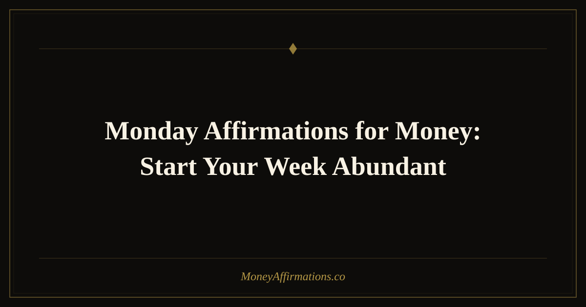

Monday Affirmations for Money: Start Your Week Abundant

Monday has a particular kind of power. It can feel like a heavy restart, full of obligations and unanswered emails, or it can become the moment you choose a new financial frequency for the entire week ahead. The difference is usually not the calendar. It is the story you tell yourself before the week begins.
Monday affirmations for money help you begin from a place of calm authority rather than pressure. They turn the first workday into a fresh opening for income, clarity, confidence, and better financial choices. Instead of waking up and immediately bracing for stress, you use the beginning of the week to remind your nervous system that money can flow with structure, opportunity can arrive through ordinary actions, and your financial life is allowed to improve one decision at a time.
What are Monday affirmations for money?
Monday affirmations for money are short, present-tense statements designed to reset your financial mindset at the beginning of the week. They work especially well because Monday naturally carries the energy of a new cycle. Your calendar is open enough to be shaped, your goals are still fresh, and your mind is looking for a tone to follow.
When you repeat money affirmations on Monday morning, you are not pretending the week will be effortless. You are choosing the identity you will bring into it: someone who sees income opportunities, handles money with care, prices their work with confidence, and trusts that consistent action creates measurable results. Over time, that identity becomes easier to inhabit, especially in the small financial moments that usually trigger stress.
25 Monday affirmations for money
- This Monday, I begin the week aligned with abundance and financial clarity.
- Money flows to me this week through expected and unexpected channels.
- I enter this Monday confident, focused, and open to new income opportunities.
- This week, every financial choice I make supports my freedom.
- I release weekend worry and welcome a fresh week of prosperity.
- Monday is my reset point, and I choose wealth-building thoughts today.
- I am ready to receive, earn, save, and grow more money this week.
- My work is valuable, and this week I am paid well for the value I create.
- I start this week trusting that there is more than enough for me.
- Every Monday brings new chances to strengthen my relationship with money.
- I approach my finances this week with calm, courage, and wisdom.
- This week, I notice opportunities that my old mindset would have missed.
- I am organized, capable, and financially supported as this week begins.
- Money responds to my clarity, consistency, and confident action.
- I welcome profitable ideas, helpful people, and generous opportunities this week.
- This Monday, I let go of scarcity and choose an abundant inner voice.
- I am allowed to make more money with more ease than before.
- My income can grow this week in ways that feel natural and aligned.
- I handle bills, budgets, and decisions from a place of power.
- Each day this week brings me closer to financial peace.
- I am the kind of person who starts the week with intention and ends it with progress.
- I trust myself to make smart money choices all week long.
- Monday is not a burden; it is a doorway into greater abundance.
- I am grateful for the money I have and ready for the money coming to me.
- This week is full of financial blessings, and I am open to receiving them.
How to use these affirmations
The best way to use Monday money affirmations is before the week starts making demands on you. Choose five affirmations from the list above and say them before opening your inbox, checking your bank account, or looking at social media. This matters because your first emotional state often becomes the filter for everything that follows. If you begin in anxiety, even neutral information can feel threatening. If you begin in steadiness, you are more likely to respond wisely.
For a deeper practice, pair your affirmations with a simple weekly money intention. After repeating your chosen statements, write one sentence that begins with, "This week, I choose to..." You might choose to save a specific amount, send a proposal, review your budget, ask for a higher rate, or simply stop avoiding one money task. The affirmation prepares your identity; the intention gives that identity somewhere practical to go.
How Monday shapes your entire week's financial behavior
There is strong evidence in behavioral psychology that how we begin a task or period heavily influences how we perform throughout it. Researchers call this the "fresh start effect" — the tendency for people to pursue goals more vigorously after temporal landmarks like the start of a week, month, or year. Monday is the most frequent fresh start available to you. That makes it one of the most leveraged moments in your entire financial life.
When you begin Monday with a scattered or anxious money mindset, that emotional state tends to persist in small but compounding ways. You might avoid checking your finances, make impulse decisions to cope with stress, underprice your work, or miss opportunities because your attention is contracted. When you begin from clarity and abundance, you are more likely to notice income opportunities, make confident decisions, and engage proactively with your financial goals rather than reactively.
Monday money affirmations work because they interrupt the default pattern before it takes hold. Rather than letting the week's financial tone be set by your inbox, your to-do list, or last week's unresolved stress, you choose it deliberately. You decide, in two minutes on a Monday morning, what kind of financial thinker you are going to be for the next five days. That is a small act with outsized consequences.
The compounding effect is also worth understanding. If you use Monday affirmations consistently for twelve weeks, you have made a deliberate wealth-aligned choice at the start of twelve consecutive cycles. The financial behavior that results from even slightly elevated Monday confidence — one extra conversation about a raise, one budget review you did not avoid, one investment contribution made instead of spent — adds up to a meaningfully different financial position over a year. Monday is not just a day. It is a weekly vote for the financial future you are building.
Tips to make them work faster
- Use them before planning your week. Say your affirmations first, then look at your calendar and money tasks from a more empowered state.
- Choose one financial action. Let each Monday practice lead to one small step: a transfer to savings, a debt payment, a pitch, or a budget review.
- Repeat them at lunch. A midday reset keeps the Monday mood from collapsing into old stress patterns.
- Track one piece of evidence. At the end of the day, write down one moment where abundance, value, or support showed up.
- Keep the same set for a month. Repetition is what turns the words from encouragement into belief.
Frequently Asked Questions
Why are Monday affirmations so powerful?
Monday affirmations are powerful because they meet your mind at the beginning of a natural reset. The week has not fully unfolded yet, so your expectations are still flexible. By choosing an abundant money mindset early, you influence how you interpret opportunities, setbacks, conversations, and financial decisions throughout the week.
Should I say Monday money affirmations only on Monday?
You can use them any time you need a fresh start, but they are especially effective on Monday morning. If one statement resonates deeply, repeat it throughout the week as a touchstone. Think of Monday as the planting day and the rest of the week as the period where you keep watering that belief with action.
Can these affirmations help with work stress?
Yes, especially when your work stress is tied to money, worth, performance, or security. These affirmations remind your nervous system that the week is not something happening to you; it is something you can participate in with intention. That shift can make difficult tasks feel more manageable and financially meaningful.
For a deeper foundation beneath your weekly practice, explore the full money affirmations collection and choose statements that support every part of your financial life.